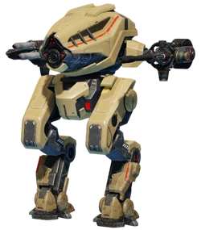
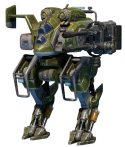
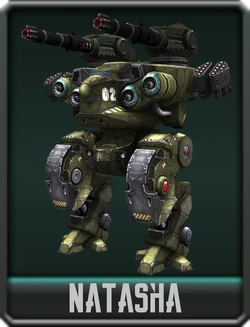
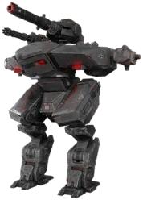
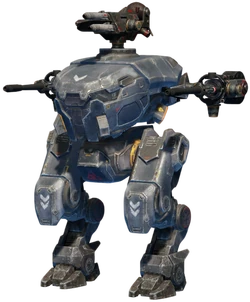
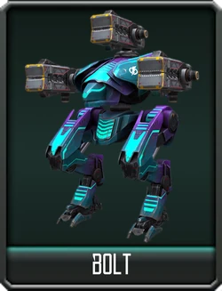
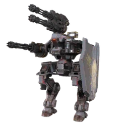
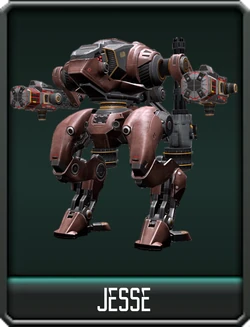
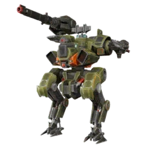
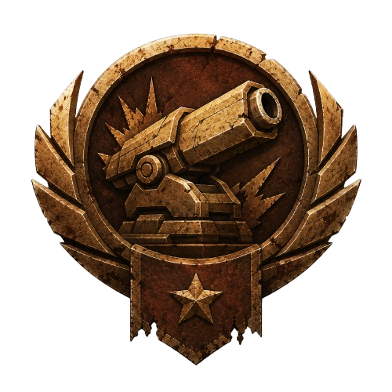

Robot roster
Search and filter through every known robot in the wiki.

01Destrier
LightThe "training" bot for all new mercenaries. Built by DSC as a low-cost way to introduce future pilots to the working of war.

02Cossack
LightA small and nimble robot best suited for scouting and capturing beacons.

03Natasha
HeavyA bulky, primitive powerhouse of a robot built by Spacetech to dominate and lock down areas of the battlefield in the early days of the war.

04Leo
HeavyA heavy and menacing brawler built as an answer to the Natasha by Icarus Technologies. This robot boasts the same toughness and ability to hold an area as its competitor, while slightly sacrificing some firepower to be able to relocate easier if needed.

05Gepard
LightA slightly more capable robot made for training fresh recruits to be placed into the ranks of Icarus Technologies' fighting force. Fast and light, this robot can hold it's own against other scouts to claim early territory.
GI. Patton
LightAn early model of war machine that foreshadowed the power-oriented vision of DSC and it's engineers. This robot was more than capable of taking down scouts and even contributing to a group effort to push and claim territory.

07Bolt
LightAn early introduction for pilots that seek a stealthier and more subtle way of influencing the outcome of a battle. This robot possesses a booster engine that can propel itself into or out of situations.

08Gareth
LightA lighter robot that sacrifices mobility for protection. Boasting a shield that can fold to allow freedom of movement, DSC built the Gareth to take out scouting foes.

09Jesse
LightYet another showcase of early DSC innovation. This robot was built to supply the pilot with two separate sets of weapons that can fold back and switch with each other to provide an answer to different situations.

10Vityaz
MediumA less impressive robot in terms of flair. Spacetech seems to have built this platform to wait for and pick off weaker targets. Holding reasonable firepower but not much in terms of raw strength and durability, the Vityaz is more suited to discouraging flankers from attacking.
Rogatka
LightMuch like the Cossack, Spacetech built the Rogatka for tactical repositioning and mobility. While it is somewhat slower, this unit brings a second weapon and a stronger hull, allowing it to engage in combat and drive away other scouts.
Stalker
LightA master of early ground coverage, this unit was capable of capturing key point on the battlefield with no risk to the pilot due to it's stealth drive. Cutting edge technology for it's time, the Stalker possesses the ability to entirely hide itself from auto-targeting software, allowing the pilot to cover ground safely.
Galahad
MediumA bulkier design, the Galahad takes the design of the Gareth and adds another light weapon hardpoint alongside a stronger shield and bulkier hull. While not suited for long combat, this unit could contribute more to group raids and had better chances of survival in shorter duels.
Butch
HeavyThe heavy variant of the Jesse. This unit was a marvel of it's time. Packing four heavy weapons that switched pairs when activating the ability, this robot could dynamically switch it's active weapons to respond to the ever-changing flow of combat.
Doc
MediumPowerful but agile, the Doc was the middleground of the Wild West themed robots. Bringing good firepower and respectable speed, this unit was capable of packing away unwary pilots or claiming a key point on the battlefield with ease. Possessing the ability to switch between two of it's four medium weapons, this unit was adaptable and threatening.
Carnage
HeavyYet another technological breakthrough, Carnage made DSC a popular faction for robot purchases following it's debut. This unit possessed the first ever energy shield ever seen on the battlefield. While it held two heavy weapons and could protect itself and a few allies with the energy bubble, this robot was better suited as an ambushing skirmisher when alone. While the shield was amazing for survivability, Carnage didn't have a hull strong enough to sustain combat when the shield fell, requiring a skilled pilot to know when best to retreat.
Rhino
HeavyAn early showcase of DSC ideals. Rhino powered through the enemy lines with a show of brute force. Possessing a frontal shield that deployed when charging, this unit was capable of taking a beating.
Hover
MediumUnique in design, this unit was the first to take the battle vertical in ways never before seen. Possessing jet thrusters, Hover could propel itself high into the air to fire upon targets that were foolish enough to think the were safe behind low cover.
Lancelot
HeavyAnother sturdy creation by DSC. This robot is the heavy version of Gareth and Galahad. Equipped with a strong frontal shield and movement enhancing thrusters, this unit was capable of carving it's way through opposing mercenaries like they were flies.
Ao Qin
LightThe light installment of the first true flying robot. The addition of flight capabilities makes it a versatile unit in various combat scenarios, able to leverage it's built-in arc-laser to provide extra firepower and burn through the hulls of most low-end skirmisher and scout oriented robots.
Kumiho
MediumBuilt with the same technology as the Bolt, Kumiho possesses an upgraded dash drive that allows it to engage enemies more effectively and with greater precision. While still not impressive in turns of raw power and durability, it remains a solid choice for pilots seeking a balanced and versatile unit while on a budget.
Griffin
MediumIntegrated with the same jump drive as the Cossack, this unit changed the flow of battle forever. Able to effectively ambush target around cover, Griffin was usually built for burst damage to neutralize lighter units and unwary pilots.

No robots match that search or filter yet.
Suggested structure
Keep the landing page as the index, then split each robot into its own article later.
- Card title Robot name, rarity, or class should be obvious at a glance.
- Preview area Use this for an image, silhouette, or quick visual marker.
- Summary line Keep the copy short so the grid stays readable as it grows.
- Future link Point each card at its own page slug when you build the individual articles.
Notes for later
These are the little details that make the page easier to maintain over time.
Slug convention
Rename each `href` to match the final page path you choose, such as a simple slug or a folder per robot.
Adding more robots
Duplicate a card block, update the preview label, and fill in the new robot’s summary without changing the layout.
Keeping it scalable
The grid automatically expands, so you can add a lot of entries without redesigning the page.